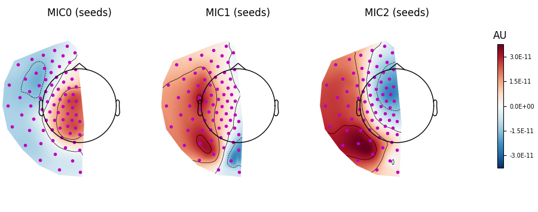
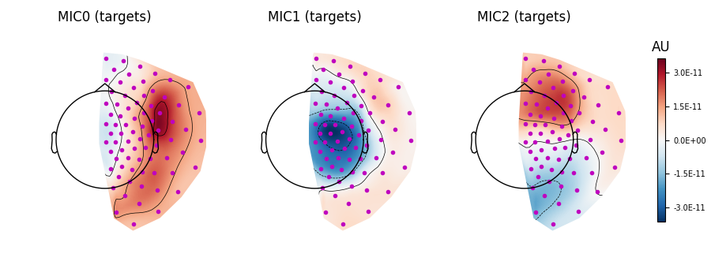
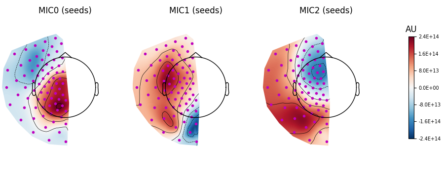
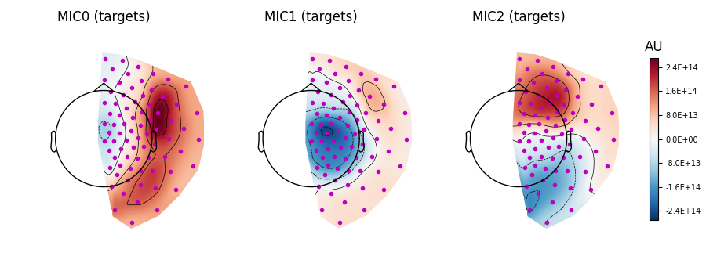

Note
Go to the end to download the full example code.
Visualising spatial contributions to multivariate connectivity#
This example demonstrates how the spatial filters and patterns of connectivity obtained from the decomposition tools in the decoding module can be visualised and interpreted.
# Author: Thomas S. Binns <t.s.binns@outlook.com>
# License: BSD (3-clause)
# sphinx_gallery_multi_image = "single"
import mne
from mne import make_fixed_length_epochs
from mne.datasets.fieldtrip_cmc import data_path
from mne_connectivity import CoherencyDecomposition
Background#
Multivariate forms of signal analysis allow you to simultaneously consider the activity of multiple signals. In the case of connectivity, the interaction between multiple sensors can be analysed at once and the strongest components of this interaction captured in a lower-dimensional set of connectivity spectra. This approach brings not only practical benefits (e.g. easier interpretability of results from the dimensionality reduction), but can also offer methodological improvements (e.g. enhanced signal-to-noise ratio and reduced bias).
Coherency-based methods are popular approaches for analysing connectivity, capturing correlations between signals in the frequency domain. Various coherency-based multivariate methods exist, including: canonical coherency (CaCoh; multivariate measure of coherency/coherence) [1]; and maximised imaginary coherency (MIC; multivariate measure of the imaginary part of coherency) [2].
- These methods are described in detail in the following examples:
comparison of coherency-based methods - Comparison of coherency-based methods
MIC - Compute multivariate measures of the imaginary part of coherency
The CaCoh and MIC methods work by finding spatial filters that decompose the data into components of connectivity, and applying them to the data. Connectivity can then be computed on this transformed data (see Multivariate decomposition for efficient connectivity analysis for more information).
However, in addition to the connectivity scores, useful insights about the data can be gained by visualising the topographies of the spatial filters and their corresponding spatial patterns. These provide important information about the spatial distributions of connectivity information, and represent two complementary aspects:
The filters represent how the connectivity sources are extracted from the channel data, akin to an inverse model.
The patterns represent how the channel data is formed by the connectivity sources, akin to a forward model.
This distinction is discussed further in Haufe et al. (2014) [3], but in short: the patterns should be used to interpret the contribution of distinct brain regions/sensors to a given component of connectivity. Accordingly, keep in mind that the filters and patterns are not a replacement for source reconstruction, as without this the patterns will still only tell you about the spatial contributions of sensors, not underlying brain regions, to connectivity.
Generating the filters and patterns#
We will first load some example MEG data collected during a hand movement task, which we will generate the spatial filters and patterns for (see here for more information on the data). We divide the data into continuous epochs.
# Load example MEG data
raw = mne.io.read_raw_ctf(data_path() / "SubjectCMC.ds")
raw.pick("mag")
raw.crop(50.0, 110.0).load_data()
raw.notch_filter(50)
raw.resample(100)
# Create epochs
epochs = make_fixed_length_epochs(raw, duration=2.0).load_data()
ds directory : /home/circleci/mne_data/MNE-fieldtrip_cmc-data/SubjectCMC.ds
res4 data read.
hc data read.
Separate EEG position data file not present.
Quaternion matching (desired vs. transformed):
0.33 78.32 0.00 mm <-> 0.33 78.32 0.00 mm (orig : -71.62 40.46 -256.48 mm) diff = 0.000 mm
-0.33 -78.32 -0.00 mm <-> -0.33 -78.32 -0.00 mm (orig : 39.27 -70.16 -258.60 mm) diff = 0.000 mm
114.65 0.00 -0.00 mm <-> 114.65 0.00 -0.00 mm (orig : 64.35 66.64 -262.01 mm) diff = 0.000 mm
Coordinate transformations established.
Polhemus data for 3 HPI coils added
Device coordinate locations for 3 HPI coils added
Picked positions of 4 EEG channels from channel info
4 EEG locations added to Polhemus data.
Measurement info composed.
Finding samples for /home/circleci/mne_data/MNE-fieldtrip_cmc-data/SubjectCMC.ds/SubjectCMC.meg4:
System clock channel is available, checking which samples are valid.
75 x 12000 = 911610 samples from 191 chs
390 samples omitted at the end
Current compensation grade : 0
Removing 5 compensators from info because not all compensation channels were picked.
Reading 0 ... 72000 = 0.000 ... 60.000 secs...
Filtering raw data in 1 contiguous segment
Setting up band-stop filter from 49 - 51 Hz
FIR filter parameters
---------------------
Designing a one-pass, zero-phase, non-causal bandstop filter:
- Windowed time-domain design (firwin) method
- Hamming window with 0.0194 passband ripple and 53 dB stopband attenuation
- Lower passband edge: 49.38
- Lower transition bandwidth: 0.50 Hz (-6 dB cutoff frequency: 49.12 Hz)
- Upper passband edge: 50.62 Hz
- Upper transition bandwidth: 0.50 Hz (-6 dB cutoff frequency: 50.88 Hz)
- Filter length: 7921 samples (6.601 s)
Not setting metadata
30 matching events found
No baseline correction applied
0 projection items activated
Using data from preloaded Raw for 30 events and 200 original time points ...
0 bad epochs dropped
We designate the left hemisphere sensors as the seeds and the right hemisphere sensors as the targets. Since this is sensor-space data, we will use the MIC method to analyse connectivity, given its resilience to zero time-lag interactions (see Comparison of coherency-based methods for more information).
# Left hemisphere sensors
seeds = [idx for idx, ch_info in enumerate(epochs.info["chs"]) if ch_info["loc"][0] < 0]
# Right hemisphere sensors
targets = [
idx for idx, ch_info in enumerate(epochs.info["chs"]) if ch_info["loc"][0] > 0
]
# Define indices
indices = (seeds, targets)
To fit the filters (and in turn compute the corresponding patterns), we instantiate
the CoherencyDecomposition object and call the
fit() method. We also define
our connectivity frequency band of interest to be 20-30 Hz. See
Multivariate decomposition for efficient connectivity analysis for more information.
# Instantiate decomposition object
mic = CoherencyDecomposition(
info=epochs.info,
method="mic",
indices=indices,
mode="multitaper",
fmin=20,
fmax=30,
rank=(3, 3),
)
# Fit filters & generate patterns
mic.fit(epochs.get_data())
Using multitaper spectrum estimation with 7 DPSS windows
Computing cross-spectral density from epochs...
0%| | CSD epoch blocks : 0/30 [00:00<?, ?it/s]
3%|▎ | CSD epoch blocks : 1/30 [00:00<00:02, 13.06it/s]
7%|▋ | CSD epoch blocks : 2/30 [00:00<00:02, 13.09it/s]
10%|█ | CSD epoch blocks : 3/30 [00:00<00:02, 13.10it/s]
13%|█▎ | CSD epoch blocks : 4/30 [00:00<00:01, 13.11it/s]
17%|█▋ | CSD epoch blocks : 5/30 [00:00<00:01, 13.12it/s]
20%|██ | CSD epoch blocks : 6/30 [00:00<00:01, 13.14it/s]
23%|██▎ | CSD epoch blocks : 7/30 [00:00<00:01, 13.16it/s]
27%|██▋ | CSD epoch blocks : 8/30 [00:00<00:01, 13.16it/s]
30%|███ | CSD epoch blocks : 9/30 [00:00<00:01, 13.16it/s]
33%|███▎ | CSD epoch blocks : 10/30 [00:00<00:01, 13.17it/s]
37%|███▋ | CSD epoch blocks : 11/30 [00:00<00:01, 13.16it/s]
40%|████ | CSD epoch blocks : 12/30 [00:00<00:01, 13.17it/s]
43%|████▎ | CSD epoch blocks : 13/30 [00:00<00:01, 13.16it/s]
47%|████▋ | CSD epoch blocks : 14/30 [00:01<00:01, 13.16it/s]
50%|█████ | CSD epoch blocks : 15/30 [00:01<00:01, 13.17it/s]
53%|█████▎ | CSD epoch blocks : 16/30 [00:01<00:01, 13.17it/s]
57%|█████▋ | CSD epoch blocks : 17/30 [00:01<00:00, 13.17it/s]
60%|██████ | CSD epoch blocks : 18/30 [00:01<00:00, 13.17it/s]
63%|██████▎ | CSD epoch blocks : 19/30 [00:01<00:00, 13.18it/s]
67%|██████▋ | CSD epoch blocks : 20/30 [00:01<00:00, 13.18it/s]
70%|███████ | CSD epoch blocks : 21/30 [00:01<00:00, 13.18it/s]
73%|███████▎ | CSD epoch blocks : 22/30 [00:01<00:00, 13.19it/s]
77%|███████▋ | CSD epoch blocks : 23/30 [00:01<00:00, 13.19it/s]
80%|████████ | CSD epoch blocks : 24/30 [00:01<00:00, 13.20it/s]
83%|████████▎ | CSD epoch blocks : 25/30 [00:01<00:00, 13.19it/s]
87%|████████▋ | CSD epoch blocks : 26/30 [00:01<00:00, 13.19it/s]
90%|█████████ | CSD epoch blocks : 27/30 [00:02<00:00, 13.19it/s]
93%|█████████▎| CSD epoch blocks : 28/30 [00:02<00:00, 13.19it/s]
97%|█████████▋| CSD epoch blocks : 29/30 [00:02<00:00, 13.18it/s]
100%|██████████| CSD epoch blocks : 30/30 [00:02<00:00, 13.18it/s]
100%|██████████| CSD epoch blocks : 30/30 [00:02<00:00, 13.18it/s]
[done]
Computing MIC for connection 1 of 1
Visualising the patterns#
Visualising the patterns as topomaps can be done using the
plot_patterns() method.
When interpreting patterns, note that the absolute value reflects the strength of the contribution to connectivity, and that the sign differences can be used to visualise the orientation of the underlying dipole sources. The spatial patterns are not bound between \([-1, 1]\).
Plotting the patterns for 20-30 Hz connectivity below, we find the strongest connectivity (‘MIC0’, i.e. 1st component) between the left and right hemispheres comes from centromedial left and frontolateral right sensors, based on the areas with the largest absolute values. Patterns for the weaker connectivity components (‘MIC1’ & ‘MIC2’ are also shown). As these patterns come from decomposition on sensor-space data, we make no assumptions about the underlying brain regions involved in this connectivity.
# Plot patterns
mic.plot_patterns(info=epochs.info, sensors="m.", size=2)
- 
- 
[<MNEFigure size 900x355 with 4 Axes>, <MNEFigure size 900x355 with 4 Axes>]
Visualising the filters#
We can also visualise the filters as topomaps using the
plot_filters() method.
Here we see that the filters show a similar topography to the patterns. However, this is not always the case, and you should never confuse the information represented by the filters (i.e. an inverse model) and patterns (i.e. a forward model), which can lead to very incorrect interpretations of the data [3].
# Plot filters
mic.plot_filters(info=epochs.info, sensors="m.", size=2)
- 
- 
[<MNEFigure size 900x355 with 4 Axes>, <MNEFigure size 900x355 with 4 Axes>]
References#
Total running time of the script: (0 minutes 6.701 seconds)